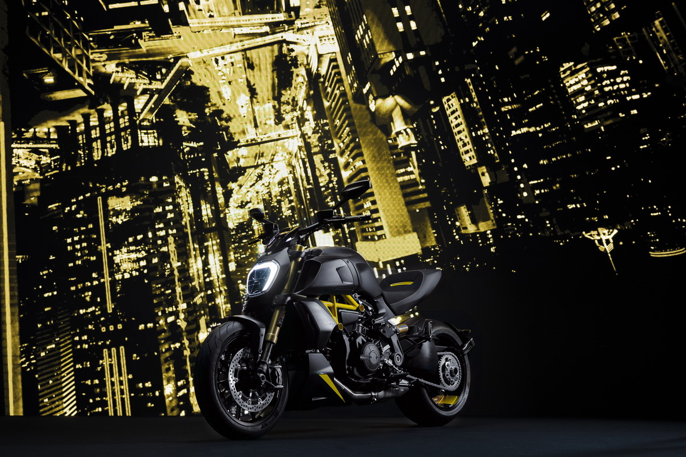

| Una motocicleta, comúnmente conocida en español con la abreviatura moto, es un vehículo de dos ruedas, impulsado por un motor de combustión interna a gasolina que acciona la rueda trasera, en raras excepciones en las que el impulso se daría en la rueda delantera o en ambas, superior a 50 cc. si es de combustión interna y con una velocidad máxima por construcción superior a 45 km/h. El cuadro o chasis y las ruedas constituyen la estructura fundamental del vehículo. La rueda directriz es la delantera. Pueden transportar hasta dos personas, y tres si están dotadas de sidecar. |  |
|
|